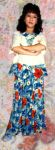
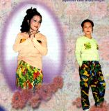

No 109
Si nous voulons retourner à la pureté du royaume de Dieu, ou à la nature de Bouddha, nous devons toujours faire notre possible pour être concentré dans tout ce que nous faisons. Maître Suprême Ching Hai |
 Sommaire détaillé Sommaire détaillé
| ||
 Début d'une série de tenues décontractées du "Yogi heureux"   Rayonnante et belle, la collection d'automne pour homme et femme du "Yogi heureux" est officiellement sortie et disponible dans une gamme de quatre couleurs : violet, orange, blanc et vert. La prochaine collection d'hiver pour homme et femme sera légère, chaude et facile à laver. Maître a spécialement créé cette série pour homme, réalisant enfin leur rêve de leurs propres vêtements Célestes ! Laissons le 21ème siècle de joie commencer avec vous alors que vous apprécierez ces créations uniques ! La broche commémorative de l'an 2000 Pour exprimer notre gratitude envers Maître de nous mener vers l'âge d'or, la compagnie S.M. Celestial a créé spécialement la broche commémorative de l'an 2000, qui symbolise magnifiquement l'état de félicité du paradis.
|